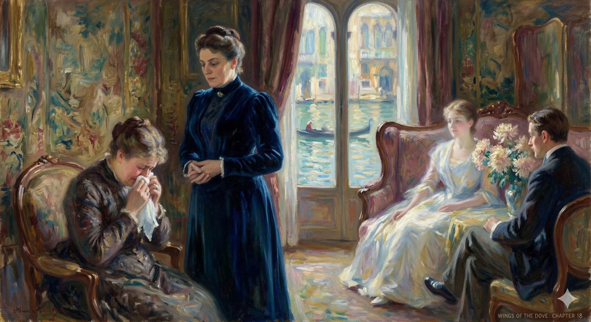

After Kate and Densher leave, Milly and Mrs. Stringham (Susie) are alone. Milly asks Susie about Kate, and Susie says Kate "knew" about her meeting with the doctor, Sir Luke Strett. Milly tells Susie that she and the doctor must "see me through." They embrace, and Milly insists she doesn't want to know the details of what the doctor said, only that Susie will help her follow his instructions. Susie reports that the doctor told her she can help Milly and that Milly must do as she likes. Milly asks Susie for her opinion of Mr. Densher, and Susie calls him handsome. Milly says the doctor's advice to her is "to live."
The next morning, Susie visits Mrs. Lowder and cries. She then recounts her meeting with Sir Luke. Susie explains that the doctor confirmed Milly does not have the illness she feared, but he found something else. The doctor did not tell her what it is, and instructed that Milly must be made happy. Milly is to return to see him in three months.
Mrs. Lowder and Susie discuss this, interpreting it to mean Milly should marry Merton Densher. Susie asks for Mrs. Lowder's help. Mrs. Lowder reveals that her niece Kate thinks she cares for Densher but is mistaken. She instructs Susie to deny this if asked. Mrs. Lowder then proposes a plan: Milly and Susie will stay, and she will host a dinner for them to meet Densher. Mrs. Lowder says she is giving up her own higher ambitions for Milly's marriage. She and Susie agree that Densher is charming.
Based on the text, here is a concise character study:
He was to remain for several days under the deep impression of this inclusive passage, so luckily prolonged from moment to moment, but interrupted at its climax, as may be said, by the entrance of Aunt Maud, who found them standing together near the fire. The bearings of the colloquy, however, sharp as they were, were less sharp to his intelligence, strangely enough, than those of a talk with Mrs. Lowder alone for which she soon gave him—or for which perhaps rather Kate gave him—full occasion. What had happened on her at last joining them was to conduce, he could immediately see, to her desiring to have him to herself. Kate and he, no doubt, at the opening of the door, had fallen apart with a certain suddenness, so that she had turned her hard fine eyes from one to the other; but the effect of this lost itself, to his mind, the next minute, in the effect of his companion's rare alertness. She instantly spoke to her aunt of what had first been uppermost for herself, inviting her thereby intimately to join them, and doing it the more happily also, no doubt, because the fact she resentfully named gave her ample support. "Had you quite understood, my dear, that it's full three weeks—?" And she effaced herself as if to leave Mrs. Lowder to deal from her own point of view with this extravagance. Densher of course straightway noted that his cue for the protection of Kate was to make, no less, all of it he could; and their tracks, as he might have said, were fairly covered by the time their hostess had taken afresh, on his renewed admission, the measure of his scant eagerness. Kate had moved away as if no great showing were needed for her personal situation to be seen as delicate. She had been entertaining their visitor on her aunt's behalf—a visitor she had been at one time suspected of favouring too much and who had now come back to them as the stricken suitor of another person. It wasn't that the fate of the other person, her exquisite friend, didn't, in its tragic turn, also concern herself: it was only that her acceptance of Mr. Densher as a source of information could scarcely help having an awkwardness. She invented the awkwardness under Densher's eyes, and he marvelled on his side at the instant creation. It served her as the fine cloud that hangs about a goddess in an epic, and the young man was but vaguely to know at what point of the rest of his visit she had, for consideration, melted into it and out of sight.
He was deeply affected by that long conversation, which seemed to go on forever, until Aunt Maud walked in and interrupted it just as it was reaching a peak. However, that conversation, although intense, didn't impact him as much as a later one he had alone with Mrs. Lowder. She, or perhaps Kate, soon gave him the opportunity for that private conversation. He immediately understood that Kate's desire to speak with him privately was prompted by something that had happened when she'd finally joined them. When the door opened, he and Kate had probably separated abruptly, causing Mrs. Lowder to look sharply between them. But he forgot about that quickly, because he was fascinated by Kate's quick thinking. She immediately told her aunt about something that was bothering her, inviting her to join them, and probably felt good about doing it because it gave her a strong argument. "Did you understand, dear, that it's been three whole weeks—?" And she stepped back, as if to let Mrs. Lowder deal with the situation. Densher realized his job was to protect Kate, and he made the most of the opportunity. They were already well-covered when Mrs. Lowder, after Densher reiterated his agreement, judged his lack of enthusiasm. Kate had moved away, as if her delicate situation was obvious. She had been entertaining their visitor for her aunt—a visitor she was once suspected of being too fond of, and who had now returned as the rejected suitor of another woman. It wasn't that she didn't care about the other woman, her dear friend's tragic situation; it was just that talking to Mr. Densher for information was awkward. She invented that awkwardness right in front of him, and he was amazed at how quickly she did it. It was like the cloud that surrounds a goddess in an epic, and he never quite knew when she’d vanished into it, out of sight, for the rest of his visit.
He was taken up promptly with another matter—the truth of the remarkable difference, neither more nor less, that the events of Venice had introduced into his relation with Aunt Maud and that these weeks of their separation had caused quite richly to ripen for him. She had not sat down to her tea-table before he felt himself on terms with her that were absolutely new, nor could she press on him a second cup without her seeming herself, and quite wittingly, so to define and establish them. She regretted, but she quite understood, that what was taking place had obliged him to hang off; they had—after hearing of him from poor Susan as gone—been hoping for an early sight of him; they would have been interested, naturally, in his arriving straight from the scene. Yet she needed no reminder that the scene precisely—by which she meant the tragedy that had so detained and absorbed him, the memory, the shadow, the sorrow of it—was what marked him for unsociability. She thus presented him to himself, as it were, in the guise in which she had now adopted him, and it was the element of truth in the character that he found himself, for his own part, adopting. She treated him as blighted and ravaged, as frustrate and already bereft; and for him to feel that this opened for him a new chapter of frankness with her he scarce had also to perceive how it smoothed his approaches to Kate. It made the latter accessible as she hadn't yet begun to be; it set up for him at Lancaster Gate an association positively hostile to any other legend. It was quickly vivid to him that, were he minded, he could "work" this association: he had but to use the house freely for his prescribed attitude and he need hardly ever be out of it. Stranger than anything moreover was to be the way that by the end of a week he stood convicted to his own sense of a surrender to Mrs. Lowder's view. He had somehow met it at a point that had brought him on—brought him on a distance that he couldn't again retrace. He had private hours of wondering what had become of his sincerity; he had others of simply reflecting that he had it all in use. His only want of candour was Aunt Maud's wealth of sentiment. She was hugely sentimental, and the worst he did was to take it from her. He wasn't so himself—everything was too real; but it was none the less not false that he had been through a mill.
He immediately became preoccupied with something else: the remarkable difference, neither more nor less, that his experiences in Venice had created in his relationship with Aunt Maud, a difference that their weeks apart had only intensified. She hadn't even sat down to tea before he felt like he was on completely new footing with her. She hadn't even offered him a second cup before she seemed to be deliberately defining and solidifying that new relationship. She was sorry, but she understood, that what had happened had forced him to stay away. They had—after hearing from poor Susan that he was gone—been hoping to see him soon. They would have been interested, of course, in his arrival straight from the scene. Yet she needed no reminding that the scene itself—by which she meant the tragedy that had held him back so long, the memory, the shadow, the sorrow of it—was what made him seem withdrawn. She was, in effect, presenting him to himself in the persona she'd now adopted for him, and it was the element of truth in that character that he, for his part, found himself accepting. She treated him as if he were devastated and ravaged, frustrated and already grieving; and he realized that this opened a new era of honesty with her, and that it also made his approach to Kate easier. It made Kate seem approachable in a way she hadn't been before. It established for him, at Aunt Maud's house, a connection that was actively opposed to any other narrative. He quickly realized that, if he wanted to, he could "work" this connection: he only had to behave in the manner she expected, and he would hardly ever have to leave the house. Moreover, by the end of a week, he was surprisingly convinced that he had surrendered to Mrs. Lowder’s perception of him. He had somehow met her halfway in a way that had carried him forward—carried him forward a distance he couldn’t retrace. He spent private hours wondering what had happened to his sincerity, and other hours simply reflecting that he could use it to his advantage. His only lack of honesty was Aunt Maud's abundance of sentimentality. She was extremely sentimental, and the worst thing he did was to take advantage of it. He wasn't like that himself—everything was too real to him; but it was nevertheless true that he'd been through a lot.
It was in particular not false for instance that when she had said to him, on the Sunday, almost cosily, from her sofa behind the tea, "I want you not to doubt, you poor dear, that I'm with you to the end!" his meeting her halfway had been the only course open to him. She was with him to the end—or she might be—in a way Kate wasn't; and even if it literally made her society meanwhile more soothing he must just brush away the question of why it shouldn't. Was he professing to her in any degree the possession of an aftersense that wasn't real? How in the world could he, when his aftersense, day by day, was his greatest reality? Such only was at bottom what there was between them, and two or three times over it made the hour pass. These were occasions—two and a scrap—on which he had come and gone without mention of Kate. Now that almost as never yet he had licence to ask for her, the queer turn of their affair made it a false note. It was another queer turn that when he talked with Aunt Maud about Milly nothing else seemed to come up. He called upon her almost avowedly for that purpose, and it was the queerest turn of all that the state of his nerves should require it. He liked her better; he was really behaving, he had occasion to say to himself, as if he liked her best. The thing was absolutely that she met him halfway. Nothing could have been broader than her vision, than her loquacity, than her sympathy. It appeared to gratify, to satisfy her to see him as he was; that too had its effect. It was all of course the last thing that could have seemed on the cards, a change by which he was completely free with this lady; and it wouldn't indeed have come about if—for another monstrosity—he hadn't ceased to be free with Kate. Thus it was that on the third time in especial of being alone with her he found himself uttering to the elder woman what had been impossible of utterance to the younger. Mrs. Lowder gave him in fact, on the ground of what he must keep from her, but one uneasy moment. That was when, on the first Sunday, after Kate had suppressed herself, she referred to her regret that he mightn't have stayed to the end. He found his reason difficult to give her, but she came after all to his help.
It's true that, for example, when she said to him, almost affectionately, on that Sunday, from her sofa with tea, "I want you to know, dear, that I'll support you no matter what," the only option he had was to reciprocate. She was with him, or at least might be, in a way Kate wasn't. And even if it made spending time with her more comforting, he just had to ignore the question of why it shouldn't be. Was he pretending to believe something that wasn't true? How could he, when his present feelings were his most important reality? That's all that really existed between them, and it helped pass the time on several occasions. These were times—a couple plus a little bit—when he'd visited without mentioning Kate. Now that he was finally allowed to ask about her, the strange nature of their relationship felt off. It was also strange that when he talked to Aunt Maud about Milly, nothing else came up. He practically went to her just for that, and the strangest thing was that his anxiety required it. He liked her more; he was genuinely acting, he told himself, as if he liked her best. The crucial thing was that she met him halfway. Nothing could have been more open, more talkative, or more sympathetic than she was. She seemed pleased and satisfied to see him as he was; that also had its effect. Of course, it was the last thing that could have been expected, a situation where he could be completely open with this woman. And it wouldn't have happened if—in another bizarre twist—he hadn't stopped being open with Kate. So, on the third time alone with her, he found himself saying to the older woman things he couldn't have said to the younger one. In fact, Mrs. Lowder only made him uncomfortable once, and that was when, on the first Sunday, after Kate had excused herself, she expressed regret that he hadn't stayed to the end. He had trouble explaining his reason, but she eventually understood.
"You simply couldn't stand it?"
You just couldn't handle it?
"I simply couldn't stand it. Besides you see—!" But he paused.
I just couldn't take it anymore. Anyway, you know...
But he stopped.
"Besides what?" He had been going to say more—then he saw dangers; luckily however she had again assisted him. "Besides—oh I know!—men haven't, in many relations, the courage of women."
"What else?" He was about to say more, but then he realized it was risky. Luckily, though, she'd helped him out again. "Besides... oh, I know! Men often aren't as brave as women in certain situations."
"They haven't the courage of women."
They're not as brave as women.
"Kate or I would have stayed," she declared—"if we hadn't come away for the special reason that you so frankly appreciated."
"Kate or I would have stayed," she said, "if we hadn't left for the specific reason that you so openly liked."
Densher had said nothing about his appreciation: hadn't his behaviour since the hour itself sufficiently shown it? But he presently said—he couldn't help going so far: "I don't doubt, certainly, that Miss Croy would have stayed." And he saw again into the bargain what a marvel was Susan Shepherd. She did nothing but protect him—she had done nothing but keep it up. In copious communication with the friend of her youth she had yet, it was plain, favoured this lady with nothing that compromised him. Milly's act of renouncement she had described but as a change for the worse; she had mentioned Lord Mark's descent, as even without her it might be known, so that she mustn't appear to conceal it; but she had suppressed explanations and connexions, and indeed, for all he knew, blessed Puritan soul, had invented commendable fictions. Thus it was absolutely that he was at his ease. Thus it was that, shaking for ever, in the unrest that didn't drop, his crossed leg, he leaned back in deep yellow satin chairs and took such comfort as came. She asked, it was true, Aunt Maud, questions that Kate hadn't; but this was just the difference, that from her he positively liked them. He had taken with himself on leaving Venice the resolution to regard Milly as already dead to him—that being for his spirit the only thinkable way to pass the time of waiting. He had left her because it was what suited her, and it wasn't for him to go, as they said in America, behind this; which imposed on him but the sharper need to arrange himself with his interval. Suspense was the ugliest ache to him, and he would have nothing to do with it; the last thing he wished was to be unconscious of her—what he wished to ignore was her own consciousness, tortured, for all he knew, crucified by its pain. Knowingly to hang about in London while the pain went on—what would that do but make his days impossible? His scheme was accordingly to convince himself—and by some art about which he was vague—that the sense of waiting had passed. "What in fact," he restlessly reflected, "have I any further to do with it? Let me assume the thing actually over—as it at any moment may be—and I become good again for something at least to somebody. I'm good, as it is, for nothing to anybody, least of all to her." He consequently tried, so far as shutting his eyes and stalking grimly about was a trial; but his plan was carried out, it may well be guessed, neither with marked success nor with marked consistency. The days, whether lapsing or lingering, were a stiff reality; the suppression of anxiety was a thin idea; the taste of life itself was the taste of suspense. That he was waiting was in short at the bottom of everything; and it required no great sifting presently to feel that if he took so much more, as he called it, to Mrs. Lowder this was just for that reason.
Densher hadn't said anything to express how much he appreciated everything. He figured his actions since it had happened spoke for themselves. But he eventually said – he couldn’t help himself – "I'm sure Miss Croy would have stayed." And he was again amazed at how wonderful Susan Shepherd was. She only protected him; she had only kept up the pretense. Though she spoke often with her childhood friend, she hadn't revealed anything that could hurt him. She had described Milly’s decision to leave as a bad thing; she had mentioned Lord Mark’s visit, which anyone might know anyway, so she wouldn’t seem to be hiding it. But she’d left out details and connections, and, for all he knew, she might have even made up some favorable stories. Because of this, he was completely at ease. He sat in the yellow satin chairs, constantly shaking his crossed leg in restless anticipation, and took whatever comfort he could find. Yes, she’d asked Aunt Maud questions that Kate hadn't, but that was the difference – he actually *enjoyed* her questions.
Before leaving Venice, he'd decided to consider Milly as already gone from his life. That was the only way he could imagine passing the time while waiting. He'd left her because that was what she wanted, and it wasn’t his place to interfere. This only made it more important for him to arrange how he spent his time. Uncertainty was the worst torture for him, and he wanted nothing to do with it. The last thing he wanted was to be unaware of her. What he wanted to ignore was her own consciousness, which, for all he knew, was tormented and suffering. If he hung around London while she suffered, wouldn’t that just make his days unbearable?
His plan was to convince himself – somehow, though he wasn’t sure how – that the waiting was over. "What, really," he thought, restless, "do I have to do with any of this anymore? Let me assume it’s finished – as it might be at any moment – and I can at least be useful to someone. As it is, I’m good for nothing to anyone, especially her." He tried, as much as pacing around with his eyes closed could be considered trying, but his plan wasn’t particularly successful or consistent. The days, whether they dragged or flew by, were real and difficult. Trying to suppress his anxiety was a flimsy idea. The experience of life itself was the experience of waiting. He was waiting, pure and simple, and it didn’t take long to realize that if he was spending more time with Mrs. Lowder, it was for that very reason.
She helped him to hold out, all the while that she was subtle enough—and he could see her divine it as what he wanted—not to insist on the actuality of their tension. His nearest approach to success was thus in being good for something to Aunt Maud, in default of any one better; her company eased his nerves even while they pretended together that they had seen their tragedy out. They spoke of the dying girl in the past tense; they said no worse of her than that she had been stupendous. On the other hand, however—and this was what wasn't for Densher pure peace—they insisted enough that stupendous was the word. It was the thing, this recognition, that kept him most quiet; he came to it with her repeatedly; talking about it against time and, in particular, we have noted, speaking of his supreme personal impression as he hadn't spoken to Kate. It was almost as if she herself enjoyed the perfection of the pathos; she sat there before the scene, as he couldn't help giving it out to her, very much as a stout citizen's wife might have sat, during a play that made people cry, in the pit or the family-circle. What most deeply stirred her was the way the poor girl must have wanted to live.
She supported him, and she was clever enough – and he could tell she knew what he wanted – not to dwell on the reality of their strained relationship. His closest achievement was in being helpful to Aunt Maud, since there was no one better available; her presence calmed him even as they pretended together that they had dealt with their sad situation. They talked about the dying girl as if she were already gone; they only said she had been remarkable. But, on the other hand – and this is what didn't bring Densher complete peace – they kept emphasizing how remarkable she was. It was this agreement that kept him most subdued; he discussed it with her over and over again, talking about it constantly, and, especially, as we've noted, sharing his most personal feelings, in a way he hadn't with Kate. It was almost as if she herself appreciated the perfect sadness of it all; she sat there as he told her the story, just like a well-off woman might sit during a play that made people cry, in the cheap seats or the family section. What moved her most deeply was the idea of how desperately the poor girl had wanted to live.
"Ah yes indeed—she did, she did: why in pity shouldn't she, with everything to fill her world? The mere money of her, the darling, if it isn't too disgusting at such a time to mention that—!"
Yes, absolutely – she did. Why wouldn't she, with everything going for her? And her money, the dear – if it's not too awful to even bring it up right now...
Aunt Maud mentioned it—and Densher quite understood—but as fairly giving poetry to the life Milly clung to: a view of the "might have been" before which the good lady was hushed anew to tears. She had had her own vision of these possibilities, and her own social use for them, and since Milly's spirit had been after all so at one with her about them, what was the cruelty of the event but a cruelty, of a sort, to herself? That came out when he named, as the horrible thing to know, the fact of their young friend's unapproachable terror of the end, keep it down though she would; coming out therefore often, since in so naming it he found the strangest of reliefs. He allowed it all its vividness, as if on the principle of his not at least spiritually shirking. Milly had held with passion to her dream of a future, and she was separated from it, not shrieking indeed, but grimly, awfully silent, as one might imagine some noble young victim of the scaffold, in the French Revolution, separated at the prison-door from some object clutched for resistance. Densher, in a cold moment, so pictured the case for Mrs. Lowder, but no moment cold enough had yet come to make him so picture it to Kate. And it was the front so presented that had been, in Milly, heroic; presented with the highest heroism, Aunt Maud by this time knew, on the occasion of his taking leave of her. He had let her know, absolutely for the girl's glory, how he had been received on that occasion: with a positive effect—since she was indeed so perfectly the princess that Mrs. Stringham always called her—of princely state.
Aunt Maud brought it up – and Densher completely understood – but it was like giving poetry to the life Milly was holding onto: a vision of "what could have been," which made the good woman burst into tears again. Aunt Maud had her own ideas about those possibilities and her own reasons for using them socially, and since Milly's feelings about them were so similar to hers, didn't Milly's situation also feel cruel to her? That's what came out when Densher mentioned the awful thing to know: their young friend's overwhelming terror of dying, even though she tried to hide it. Mentioning it brought him the strangest sense of relief. He allowed himself to dwell on it, as if to face it directly. Milly had passionately clung to her dream of a future, and now she was separated from it, not screaming but terribly, terrifyingly silent, like a noble young person on their way to the guillotine during the French Revolution, separated at the prison door from something they desperately wanted to keep. Densher, in a detached moment, imagined this scenario for Mrs. Lowder, but he hadn't yet felt cold enough to describe it to Kate. And it was that stoic, heroic front that Milly had presented, with the greatest heroism, as Aunt Maud knew by now, from when he had said goodbye to Milly. He had told Aunt Maud, entirely for Milly's sake, how Milly had behaved that day: with a definite effect – since she truly was the perfect princess, as Mrs. Stringham always said – of royal dignity.
Before the fire in the great room that was all arabesques and cherubs, all gaiety and gilt, and that was warm at that hour too with a wealth of autumn sun, the state in question had been maintained and the situation—well, Densher said for the convenience of exquisite London gossip, sublime. The gossip—for it came to as much at Lancaster Gate—wasn't the less exquisite for his use of the silver veil, nor on the other hand was the veil, so touched, too much drawn aside. He himself for that matter took in the scene again at moments as from the page of a book. He saw a young man far off and in a relation inconceivable, saw him hushed, passive, staying his breath, but half understanding, yet dimly conscious of something immense and holding himself painfully together not to lose it. The young man at these moments so seen was too distant and too strange for the right identity; and yet, outside, afterwards, it was his own face Densher had known. He had known then at the same time what the young man had been conscious of, and he was to measure after that, day by day, how little he had lost. At present there with Mrs. Lowder he knew he had gathered all—that passed between them mutely as in the intervals of their associated gaze they exchanged looks of intelligence. This was as far as association could go, but it was far enough when she knew the essence. The essence was that something had happened to him too beautiful and too sacred to describe. He had been, to his recovered sense, forgiven, dedicated, blessed; but this he couldn't coherently express. It would have required an explanation—fatal to Mrs. Lowder's faith in him—of the nature of Milly's wrong. So, as to the wonderful scene, they just stood at the door. They had the sense of the presence within—they felt the charged stillness; after which, their association deepened by it, they turned together away.
Before the fire in the grand room, which was filled with ornate decorations, cherubs, joy, and gold leaf, and which was warm at that hour thanks to the abundance of autumn sunlight, the situation in question had been preserved, and the circumstances—well, Densher said, for the sake of high-society London gossip, were "sublime." The gossip—since that's what it boiled down to at Lancaster Gate—wasn't less interesting because he used veiled language, nor was the veil itself, even though used carefully, drawn back too far. For that matter, he sometimes experienced the scene again as if he were reading it in a book. He saw a young man, far away and involved in a relationship he couldn't grasp, saw him silent, passive, holding his breath, only half understanding, yet dimly aware of something immense and struggling to maintain control. This young man, as seen in those moments, was too distant and unfamiliar to be identified correctly; and yet, later, outside of that moment, the face Densher recognized was his own. He knew then what the young man had been feeling, and he was to assess, day by day, how little he had forgotten. Now, there with Mrs. Lowder, he knew he had understood everything—that information was exchanged between them silently as they shared knowing glances. This was as far as their shared understanding could go, but it was enough, since she understood the core of it all. The core was that something had happened to him that was too beautiful and sacred to explain. He had, to his renewed understanding, been forgiven, dedicated, blessed; but he couldn't clearly express this. It would have required an explanation—which would have ruined Mrs. Lowder’s trust in him—of the nature of Milly’s suffering. So, regarding the amazing scene, they simply stood at the door. They sensed the presence within—they felt the charged silence; after which, their connection strengthened by it, they turned and walked away together.
That itself indeed, for our restless friend, became by the end of a week the very principle of reaction: so that he woke up one morning with such a sense of having played a part as he needed self-respect to gainsay. He hadn't in the least stated at Lancaster Gate that, as a haunted man—a man haunted with a memory—he was harmless; but the degree to which Mrs. Lowder accepted, admired and explained his new aspect laid upon him practically the weight of a declaration. What he hadn't in the least stated her own manner was perpetually stating; it was as haunted and harmless that she was constantly putting him down. There offered itself however to his purpose such an element as plain honesty, and he had embraced, by the time he dressed, his proper corrective. They were on the edge of Christmas, but Christmas this year was, as in the London of so many other years, disconcertingly mild; the still air was soft, the thick light was grey, the great town looked empty, and in the Park, where the grass was green, where the sheep browsed, where the birds multitudinously twittered, the straight walks lent themselves to slowness and the dim vistas to privacy. He held it fast this morning till he had got out, his sacrifice to honour, and then went with it to the nearest post-office and fixed it fast in a telegram; thinking of it moreover as a sacrifice only because he had, for reasons, felt it as an effort. Its character of effort it would owe to Kate's expected resistance, not less probable than on the occasion of past appeals; which was precisely why he—perhaps innocently—made his telegram persuasive. It had, as a recall of tender hours, to be, for the young woman at the counter, a trifle cryptic; but there was a good deal of it in one way and another, representing as it did a rich impulse and costing him a couple of shillings. There was also a moment later on, that day, when, in the Park, as he measured watchfully one of their old alleys, he might have been supposed by a cynical critic to be reckoning his chance of getting his money back. He was waiting—but he had waited of old; Lancaster Gate as a danger was practically at hand—but she had risked that danger before. Besides it was smaller now, with the queer turn of their affair; in spite of which indeed he was graver as he lingered and looked out.
This, in fact, became the very thing that drove our restless friend crazy after a week. He woke up one morning feeling like he'd been acting a part so much that he needed to feel good about himself to deny it. He hadn't actually told anyone at Lancaster Gate that he was harmless because he was haunted by a memory, but the way Mrs. Lowder accepted, admired, and interpreted his new behavior made it seem like he'd made a formal statement. What he hadn't said, her behavior constantly implied. She always treated him as someone haunted and harmless. However, he found a solution in plain honesty, and by the time he got dressed, he'd embraced the right thing to do.
Christmas was almost here, but it was unseasonably mild, just like in many other years in London. The air was still and soft, the light was thick and gray, and the city looked empty. In the park, where the grass was green, sheep were grazing, birds were chirping, and the straight paths encouraged a slow pace and privacy. He held onto this thought, a sacrifice to his integrity, until he left his house. Then he went to the nearest post office and sent a telegram, considering it a sacrifice only because it felt like a struggle for him. The effort came from knowing Kate would probably resist, just like she had in the past. That's why he made his telegram persuasive, perhaps without realizing it.
It had to be a little mysterious to the young woman behind the counter, since it was meant to remind Kate of tender moments. But it was quite long and conveyed a strong feeling, costing him two shillings. Later that day, in the park, as he carefully walked down one of their old paths, a cynical observer might have thought he was calculating whether he'd get his money's worth. He was waiting, but he'd waited before. Lancaster Gate, as a potential problem, was close by, but she'd faced that problem before. Besides, it seemed less threatening now, given the strange turn their relationship had taken. Even so, he seemed more serious as he lingered and looked around.
Kate came at last by the way he had thought least likely, came as if she had started from the Marble Arch; but her advent was response—that was the great matter; response marked in her face and agreeable to him, even after Aunt Maud's responses, as nothing had been since his return to London. She had not, it was true, answered his wire, and he had begun to fear, as she was late, that with the instinct of what he might be again intending to press upon her she had decided—though not with ease—to deprive him of his chance. He would have of course, she knew, other chances, but she perhaps saw the present as offering her special danger. This, in fact, Densher could himself feel, was exactly why he had so prepared it, and he had rejoiced, even while he waited, in all that the conditions had to say to him of their simpler and better time. The shortest day of the year though it might be, it was, in the same place, by a whim of the weather, almost as much to their purpose as the days of sunny afternoons when they had taken their first trysts. This and that tree, within sight, on the grass, stretched bare boughs over the couple of chairs in which they had sat of old and in which—for they really could sit down again—they might recover the clearness of their prime. It was to all intents however this very reference that showed itself in Kate's face as, with her swift motion, she came toward him. It helped him, her swift motion, when it finally brought her nearer; helped him, for that matter, at first, if only by showing him afresh how terribly well she looked. It had been all along, he certainly remembered, a phenomenon of no rarity that he had felt her, at particular moments, handsomer than ever before; one of these for instance being still present to him as her entrance, under her aunt's eyes, at Lancaster Gate, the day of his dinner there after his return from America; and another her aspect on the same spot two Sundays ago—the light in which she struck the eyes he had brought back from Venice. In the course of a minute or two now he got, as he had got it the other times, his apprehension of the special stamp of the fortune of the moment.
Finally, Kate arrived in a way he hadn't expected. It was as if she'd come from Marble Arch. But her arrival was a positive reaction—that was the key. Her face showed it, and it pleased him, even after Aunt Maud’s reactions. Nothing had been so satisfying since he’d returned to London.
It was true that she hadn't responded to his message, and since she was late, he'd started to worry. He feared she might have guessed his intentions and decided to avoid him, even though it likely wasn't an easy decision for her. Of course, she knew he'd have other opportunities, but perhaps she saw the current situation as particularly risky for her.
Densher himself realized this was exactly why he'd set things up this way, and he was happy about it, even while he waited. He was happy because the circumstances reminded him of their earlier, simpler times. Even though it was the shortest day of the year, the weather, in the same location, had unexpectedly created a mood that suited their purpose almost as well as those sunny afternoons when they’d first met. The trees nearby, on the grass, had bare branches reaching over the two chairs where they used to sit. They could actually sit there again, and perhaps recapture the clarity of their early relationship.
It was this very idea, this reference to the past, that Kate's face revealed as she quickly approached. Her speed helped him as she got closer, initially because it showed him again how incredibly attractive she was. He distinctly remembered that he'd often thought she was more beautiful than ever at certain times. He still recalled, for example, her entrance at Lancaster Gate, the day of his dinner there after he'd returned from America. He also remembered her appearance in the same place two Sundays ago, the way the light hit her as he looked at her with the eyes he'd brought back from Venice. Within a minute or two now, he fully grasped the special significance of the present moment, as he had on those other occasions.
Whatever it had been determined by as the different hours recurred to him, it took on at present a prompt connexion with an effect produced for him in truth more than once during the past week, only now much intensified. This effect he had already noted and named: it was that of the attitude assumed by his friend in the presence of the degree of response on his part to Mrs. Lowder's welcome which she couldn't possibly have failed to notice. She had noticed it, and she had beautifully shown him so; wearing in its honour the finest shade of studied serenity, a shade almost of gaiety over the workings of time. Everything of course was relative, with the shadow they were living under; but her condonation of the way in which he now, for confidence, distinguished Aunt Maud had almost the note of cheer. She had so by her own air consecrated the distinction, invidious in respect to herself though it might be; and nothing, really, more than this demonstration, could have given him had he still wanted it the measure of her superiority. It was doubtless for that matter this superiority alone that on the winter noon gave smooth decision to her step and charming courage to her eyes—a courage that deepened in them when he had presently got to what he did want. He had delayed after she had joined him not much more than long enough for him to say to her, drawing her hand into his arm and turning off where they had turned of old, that he wouldn't pretend he hadn't lately had moments of not quite believing he should ever again be so happy. She answered, passing over the reasons, whatever they had been, of his doubt, that her own belief was in high happiness for them if they would only have patience; though nothing at the same time could be dearer than his idea for their walk. It was only make-believe of course, with what had taken place for them, that they couldn't meet at home; she spoke of their opportunities as suffering at no point. He had at any rate soon let her know that he wished the present one to suffer at none, and in a quiet spot, beneath a great wintry tree, he let his entreaty come sharp.
Whatever had prompted his thoughts throughout the day, it now immediately connected to something that had happened repeatedly in the past week, only now it was much stronger. He'd already recognized and named this feeling: it was the attitude his friend took when he showed how much he appreciated Mrs. Lowder's warm welcome – something she couldn't have missed. She *had* noticed, and she'd shown him beautifully; wearing in its honour a stunning mask of calmness, almost joyfully, despite the circumstances. Everything was relative, of course, given the situation they were in; but her acceptance of the way he now, for the sake of privacy, singled out Aunt Maud almost felt encouraging. She had, with her very demeanor, endorsed this distinction, even though it could have seemed unfair to her; and really, nothing could have proven her superiority more, if he had even needed proof. It was probably just this superiority that gave her step a smooth decisiveness and her eyes a charming boldness on that winter afternoon – a boldness that intensified when he finally got to what he wanted to say. He’d waited after she joined him, just long enough to tell her, as he took her arm and turned in the familiar direction, that he wouldn't pretend he hadn't recently had times when he didn't quite believe he’d ever be this happy again. She replied, ignoring the reasons, whatever they were, for his doubt, that she believed they would be deeply happy if they were patient; though at the same time, she loved his idea for their walk. It was just a game, of course, given what had happened between them, that they couldn't meet at home; she said their opportunities weren’t limited. He'd soon let her know that he wanted this particular moment to be just as perfect, and in a quiet spot, beneath a large winter tree, he made his urgent request.
"We've played our dreadful game and we've lost. We owe it to ourselves, we owe it to our feeling for ourselves and for each other, not to wait another day. Our marriage will—fundamentally, somehow, don't you see?—right everything that's wrong, and I can't express to you my impatience. We've only to announce it—and it takes off the weight."
We messed up, and we failed. We have to do this for ourselves, for our self-respect and for our feelings for each other. We can't put it off any longer. Our marriage will—basically, in some way, don't you get it?—fix everything that's broken, and I'm so impatient to get started. All we have to do is announce it, and it will be a huge relief.
"To 'announce' it?" Kate asked. She spoke as if not understanding, though she had listened to him without confusion.
"Should I tell them?" Kate asked, pretending not to understand, even though she'd heard him clearly.
"To accomplish it then—to-morrow if you will; do it and announce it as done. That's the least part of it—after it nothing will matter. We shall be so right," he said, "that we shall be strong; we shall only wonder at our past fear. It will seem an ugly madness. It will seem a bad dream."
Get it done, right away if you want, even tomorrow. Just do it and declare it finished. That's the easy part. After that, nothing else will be important. We'll be so justified, he said, that we'll be powerful. We'll just be amazed we were ever scared. It'll seem like a terrible, crazy idea. It'll seem like a nightmare.
She looked at him without flinching—with the look she had brought at his call; but he felt now the strange chill of her brightness. "My dear man, what has happened to you?"
She looked at him steadily, the same expression she had when he called for her. But now, he felt a strange coldness coming from her. "Darling, what's wrong?"
"Well, that I can bear it no longer. That's simply what has happened. Something has snapped, has broken in me, and here I am. It's as I am that you must have me."
Okay, I can't take it anymore. That's just the truth of it. Something inside me has given way, broken. And this is how I am now. You'll have to accept me as I am.
He saw her try for a time to appear to consider it; but he saw her also not consider it. Yet he saw her, felt her, further—he heard her, with her clear voice—try to be intensely kind with him. "I don't see, you know, what has changed." She had a large strange smile. "We've been going on together so well, and you suddenly desert me?"
She pretended to think about it for a little while, but he could tell she wasn't really considering it. He observed her, he felt her presence, and—even more—he heard her, her voice so clear as she tried to be extremely nice to him. "I don't understand," she said, "what's changed." She had a big, peculiar smile. "We've been doing so well together, and now you're just leaving me?"
It made him helplessly gaze. "You call it so 'well'? You've touches, upon my soul—!"
He stared at it, unable to look away. "You call that 'good'? Honestly, you're amazing!"
"I call it perfect—from my original point of view. I'm just where I was; and you must give me some better reason than you do, my dear, for your not being. It seems to me," she continued, "that we're only right as to what has been between us so long as we do wait. I don't think we wish to have behaved like fools." He took in while she talked her imperturbable consistency; which it was quietly, queerly hopeless to see her stand there and breathe into their mild remembering air. He had brought her there to be moved, and she was only immoveable—which was not moreover, either, because she didn't understand. She understood everything, and things he refused to; and she had reasons, deep down, the sense of which nearly sickened him. She had too again most of all her strange significant smile. "Of course if it's that you really know something—?" It was quite conceivable and possible to her, he could see, that he did. But he didn't even know what she meant, and he only looked at her in gloom. His gloom however didn't upset her. "You do, I believe, only you've a delicacy about saying it. Your delicacy to me, my dear, is a scruple too much. I should have no delicacy in hearing it, so that if you can tell me you know—"
"From my perspective, I think it's perfect. I'm exactly where I was, and you need to give me a better reason for not being there too. It seems to me," she continued, "that the only way we've been right about what we've shared is if we continue to wait. I don't think we want to act like idiots."
He observed her unwavering consistency as she spoke, which was strangely and hopelessly frustrating. He'd brought her there to evoke some emotion, but she was completely unmoved. And it wasn't because she didn't understand. She understood everything, even things he refused to acknowledge, and she had her reasons, the weight of which almost made him sick. She also had that unsettling, meaningful smile.
"Of course, if you actually know something...?" He could tell that she thought it was entirely possible he did. But he didn't even know what she was talking about, and he just looked at her dejectedly. However, his sadness didn't bother her.
"I believe you do know, you're just being too polite to say it. You're being overly considerate of my feelings. I wouldn't be offended to hear it, so if you can just tell me you know..."
"Well?" he asked as she still kept what depended on it.
"Well?" he asked, as she still held onto what it was about.
"Why then I'll do what you want. We needn't, I grant you, in that case wait; and I can see what you mean by thinking it nicer of us not to. I don't even ask you," she continued, "for a proof. I'm content with your moral certainty."
Alright, I'll do what you want. We don't have to wait, I agree. And I understand why you think it's better if we don't. I'm not even asking you for proof, she went on. I'll take your word for it.
By this time it had come over him—it had the force of a rush. The point she made was clear, as clear as that the blood, while he recognised it, mantled in his face. "I know nothing whatever."
He finally understood, it hit him all at once. Her point was obvious, as obvious as the blush he felt rising in his cheeks, even though he knew he was blushing. "I truly don't know anything about it."
"You've not an idea?"
You have no idea?
"I've not an idea."
I have no idea.
"I'd consent," she said—"I'd announce it to-morrow, to-day, I'd go home this moment and announce it to Aunt Maud, for an idea: I mean an idea straight from you, I mean as your own, given me in good faith. There, my dear!"—and she smiled again. "I call that really meeting you."
"I'd say yes," she said. "I'd tell everyone tomorrow. Actually, I'd go home right now and tell Aunt Maud, as a starting point. I mean, an idea directly from you, something you came up with, and you told me in good faith. There, darling!" And she smiled again. "I think that's really getting to know you."
If it was then what she called it, it disposed of his appeal, and he could but stand there with his wasted passion—for it was in high passion that he had from the morning acted—in his face. She made it all out, bent upon her—the idea he didn't have, and the idea he had, and his failure of insistence when it brought up that challenge, and his sense of her personal presence, and his horror, almost, of her lucidity. They made in him a mixture that might have been rage, but that was turning quickly to mere cold thought, thought which led to something else and was like a new dim dawn. It affected her then, and she had one of the impulses, in all sincerity, that had before this, between them, saved their position. When she had come nearer to him, when, putting her hand upon him, she made him sink with her, as she leaned to him, into their old pair of chairs, she prevented irresistibly, she forestalled, the waste of his passion. She had an advantage with his passion now.
If she defined it in that way, it negated his argument, and he could only stand there, his frustrated feelings—because he'd been driven by intense emotion all morning—written on his face. She completely understood him—the things he hadn't considered, the things he had, his lack of assertiveness when she challenged him, his awareness of her presence, and, almost, his fear of how clearly she saw things. These things created a feeling in him that might have been rage, but quickly turned into cold calculation, a thought process that led to something else, like a hazy new beginning. It affected her then, and she experienced one of those genuine feelings that had, in the past, salvaged their relationship. When she moved closer to him, when she put her hand on him and he slumped with her into their familiar chairs, as she leaned toward him, she inevitably stopped, she prevented, the destruction of his passion. She now had the upper hand because of his emotional state.